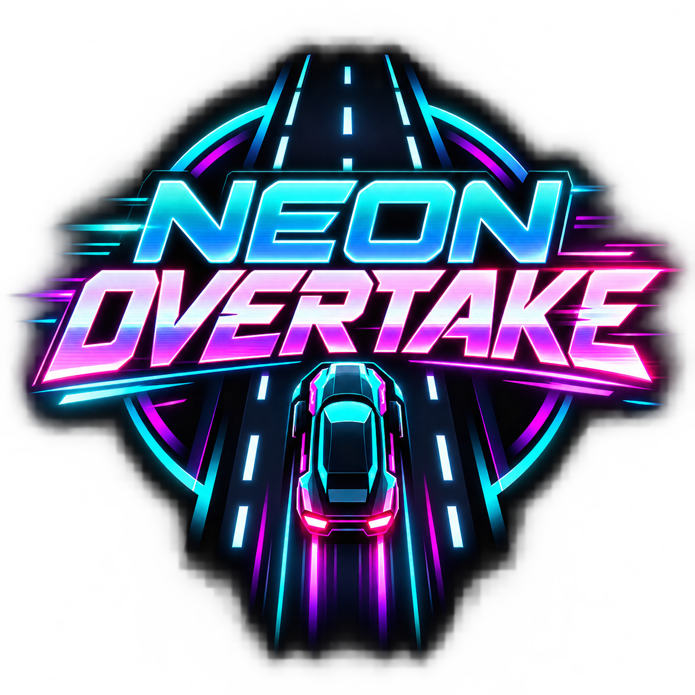

WEB PORTFOLIO
01 — PERSONAL WEBSITE
Portfolio OS
This website: a desktop-inspired, responsive portfolio with shortcut navigation, interactive windows, and light/dark themes.
INFORMATION TECHNOLOGY / DEVELOPMENT & SUPPORT
Hi, I'm
IT Graduate / Computer Technician / Aspiring Developer
I combine hands-on computer hardware and troubleshooting experience with a growing foundation in programming and web development.
01 / ABOUT ME
I'm a Bachelor of Science in Information Technology graduate from STI College San Jose Del Monte, with practical experience in computer diagnostics, PC assembly, operating system installation, and software troubleshooting.
My background also includes an on-the-job training role as a video editor at Hooli Software. I'm continuing to build my programming skills and looking for opportunities to apply both my technical experience and creativity.
02 / SELECTED WORK
This website: a desktop-inspired, responsive portfolio with shortcut navigation, interactive windows, and light/dark themes.
Edited short-form Reels content and lyric videos during my March–June 2023 internship at Hooli Software.

PYTHON / WINDOWS GAMEA neon-styled 2D arcade driving game. Dodge traffic, overtake cars, and chase a new personal best as the speed increases.
Select Neon Overtake to view gameplay screenshots, details, and its Windows installer.
02 / VIDEO EDITING
Two video-editing samples: one standard YouTube video and one YouTube Short. You can watch them here without leaving Portfolio OS.
If an embedded video is unavailable, use its YouTube link above.
03 / TECHNICAL SKILLS
A foundation in programming and practical experience with computers, software, and creative tools.
Programming languages are listed as foundational skills, consistent with my résumé.
04 / PROFESSIONAL EXPERIENCE
PC Bulacan Computer Center · San Jose del Monte, Bulacan
Hooli Software · Internship
05 / GET IN TOUCH
I'm based in San Jose del Monte, Bulacan, Philippines, and open to opportunities in software development and IT support.
Email me06 / EDUCATION
STI College San Jose Del Monte
Dean's Lister (2022)
Bulacan Standard Academy
Bulacan Standard Academy · Grades 8–10
College of Saint Adela · Grade 7 (as listed on résumé)